Assay.
A statistics and audit layer for the eval harnesses you already run. It reads the per-sample logs lm-eval, Inspect AI, and HELM already write, and turns bare point estimates into decision-grade measurements. It does not ship another runner.
Naive error bars miss clustered uncertainty by this much on the demo data.
The smallest gap a 200-item eval can resolve. Most claimed wins are smaller.
Same generations, two parsers. The harness moves the score, not the model.
Every number is labeled by how it was produced. Enforced in CI.
$ git clone https://github.com/aravinds-kannappan/Assay $ cd Assay $ pip install -e . # is my eval even powered enough? $ assay power --n 200 --p 0.7 --claim 0.021 minimum detectable effect : 9.08 pts claimed effect : 2.10 pts -> UNDERPOWERED
Cluster-robust (CR2) standard errors, because items that share a source are not independent.
A pre-flight minimum-detectable-effect check that tells you what your eval cannot see.
Attributes a score gap between two harnesses to the exact rule that caused it.
Most eval deltas are inside their own noise floor
Three documented, measured facts the project is built around. Each is an anchor from the literature that Assay re-derives in-repo rather than quoting.
Same generations, two parsers
Identical frozen GSM8K outputs score ~62.8% under lm-eval strict-match and ~70.7% under flexible-extract. The regex changed, not the model, and it can swap model order.
One benchmark, three harnesses
A single 65B model on MMLU has scored 0.488 / 0.637 / 0.636 across three published implementations that differ only in the answer-scoring rule.
The gold labels are wrong
MMLU-Redux 2.0 finds a 6.49% error rate (57% in Virology). GSM8K-Platinum removed 110 of 1,319 items. Corrected sets change who wins.
Re-derived live, not quoted: pulling MMLU-Redux 2.0 from HuggingFace gives exactly a 6.49% error rate (Virology 57%), and GSM8K to GSM8K-Platinum is exactly 110 items removed. Numbers in results/real_data/.
The harness moved the number
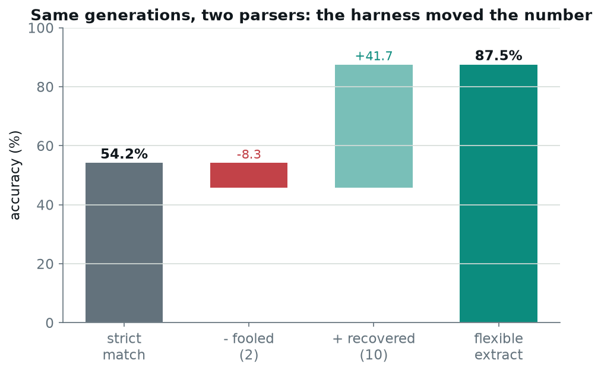
What can your eval actually see?
The same computation assay power runs, live in your browser. Move the sliders and watch the noise floor. Everything below is computed client-side with the exact Miller (Eq 9) formula.
The chart plots the minimum detectable effect against eval size for your chosen accuracy. The dashed line is your claimed gain: where it sits above the curve, the eval can resolve it; below, the gain is inside the noise floor.
Every figure is reproducible
These are generated by a single commented notebook from the shipped fixtures, and written to results/. Re-running it regenerates them exactly.
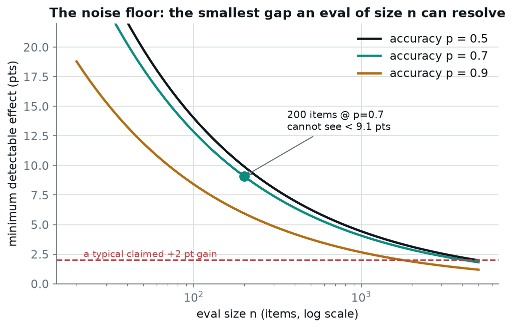
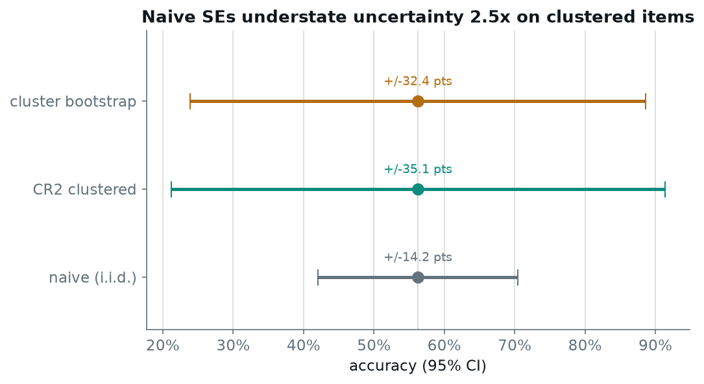
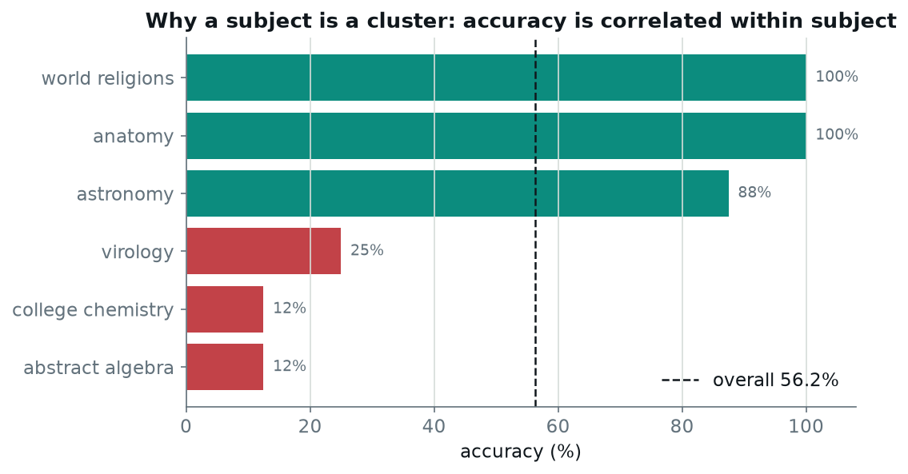
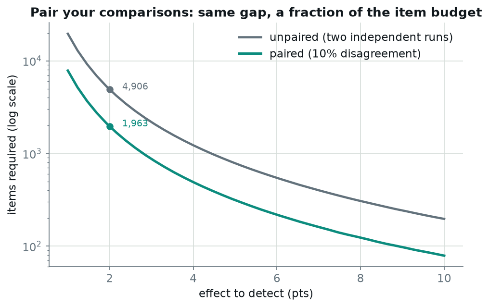
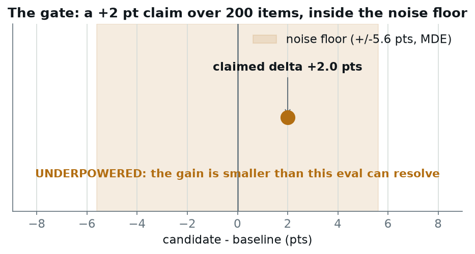
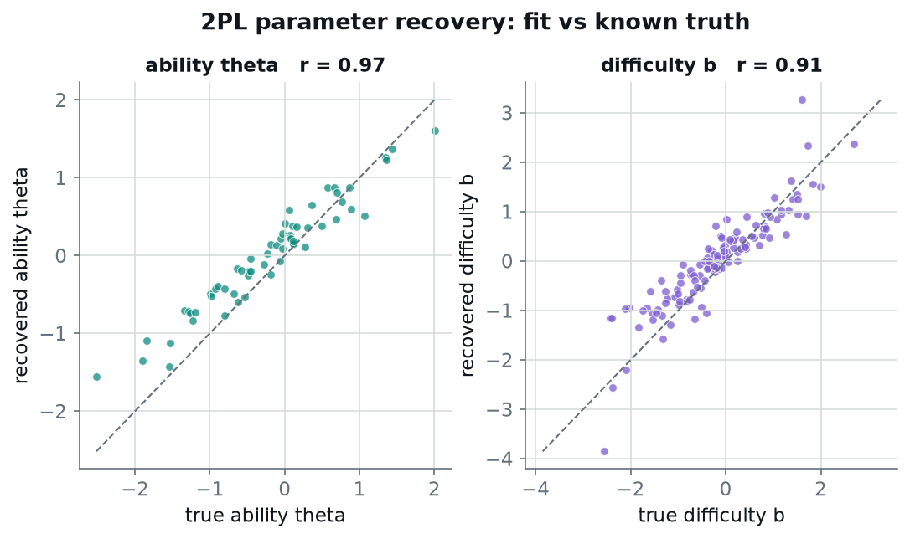
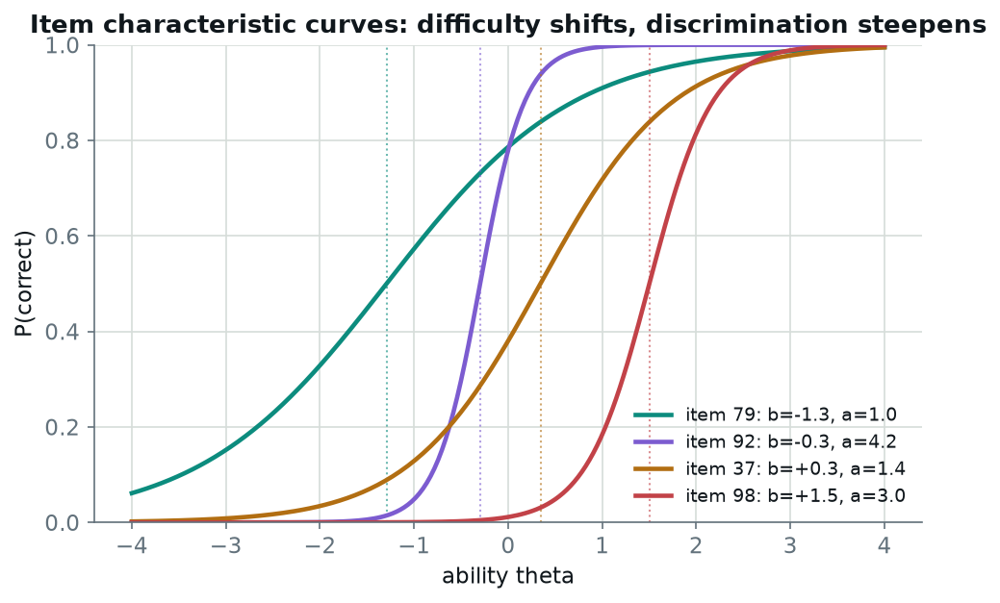
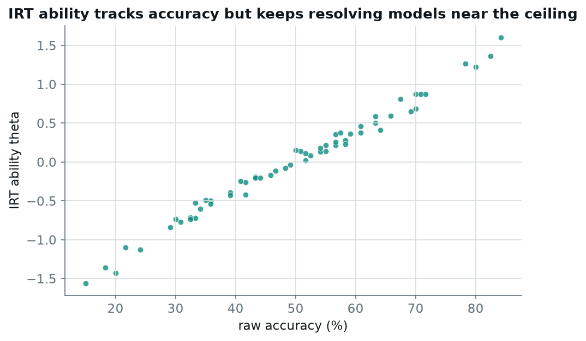
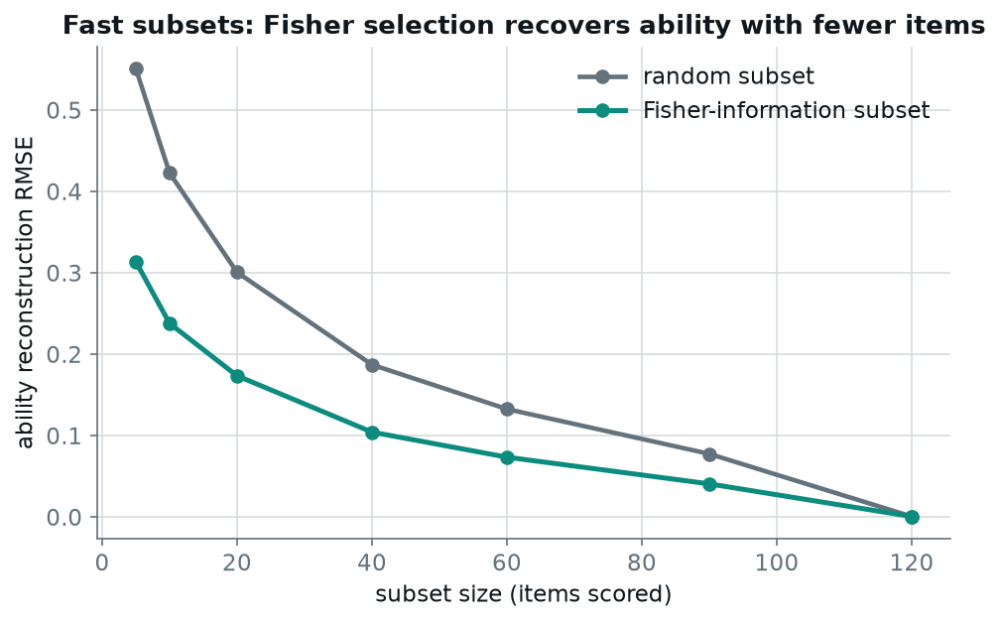
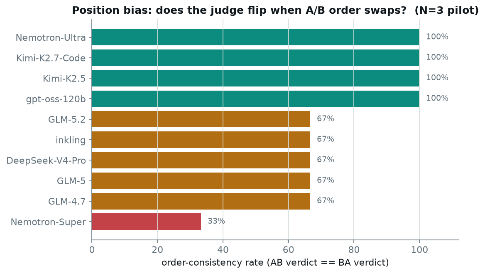
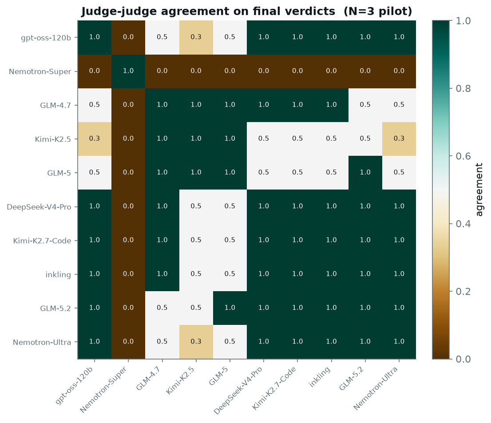
Outputs written alongside the figures: reconcile_gsm8k.json, check_mmlu_fixture.json, mde_table.csv, summary.json. The fixtures are labeled synthetic and demonstrate the method, not a finding.
See the judges think
10 models from 7 providers judged 100 real Chatbot Arena items, blind, in both A/B orderings. Read the actual responses (with the real model names revealed) and every judge's pick, confidence, and one-line reasoning. Why A/B and not model names during judging? The judges are kept blind to identity to avoid self-preference bias; the names are revealed only here, afterwards.
The 2,000 calls were run by a fleet of 25 subagents (one per 4-item chunk), each making the real model calls through the Orthogonal MCP and writing verdicts to disk. Harness code: assay.judge.run_panel, scripts/run_judge_study.py. Every judgment is LLM-judged; the statistics on top are statistically estimated.
Loading judged items…
The statistics is load-bearing
Each method is here because ignoring it produces a wrong conclusion in a specific place.
Bell-McCaffrey bias reduction. Naive SEs understate uncertainty when items share a source (MMLU subjects, DROP passages, SWE repos). Reduces exactly to the naive SE when every item is its own cluster: a property the test suite checks.
The canonical decision. Pairing makes small deltas testable at a fraction of the item budget; exact McNemar is used only when there is no cluster structure.
Miller (arXiv:2411.00640, Eq 9). The core promise: tell the user what the eval cannot resolve, before a token is spent.
Because selecting a showcase result from many slices or leaderboard pairs without multiplicity control is the forking-paths error the tool polices.
Public datasets, exact paths
Audits use real, public data only. The fixtures in the repo are synthetic and clearly labeled.
| Dataset | Use |
|---|---|
| open-llm-leaderboard/*-details | ~34M real binary outcomes for item-response modeling, split by base-model family |
| edinburgh-dawg/mmlu-redux-2.0 | relabeled gold for the benchmark linter and ranking-flip engine |
| madrylab/gsm8k-platinum | corrected GSM8K: flip-probability input and label-error positives |
| evalplus/humanevalplus, mbppplus | weak-test audit with hierarchical-bootstrap pass@k intervals |
| lmarena-ai/arena-human-preference-55k | judge validation vs crowd-preference votes |
| crfm-helm-public | golden-test substrate: reproduce published SE-inflation ratios |
What runs today, and what is next
v0.1 is an early, honest cut: the deterministic and statistical core is working and tested. The trained-model and platform pieces are on the roadmap.
| Module | What it does | Status |
|---|---|---|
| ingest | lm-eval samples adapter into a unified per-sample schema | working |
| stats | CLT + CR0/CR1/CR2 SEs, cluster bootstrap, exact + cluster-aware paired tests, MDE, Holm | working |
| reconcile | GSM8K strict-vs-flexible reconciler with per-flip attribution | working |
| check | tagged report: accuracy, clustered error bar, SE inflation, MDE | working |
| gate | GitHub Action that annotates a PR with a significance verdict (improve / regress / underpowered) | working |
| irt | 2PL item-response model, Fisher-information fast subsets, ability estimation | working |
| judge | LLM-judge calling (any OpenAI-compatible backend) + validation: kappa with clustered CI, position bias, verbosity | working |
| provenance | four-tag system, enforced in CI | working |
| inspect / helm | same schema, other harness adapters | roadmap |
| audit | tiered benchmark linter validated against relabeled gold | roadmap |